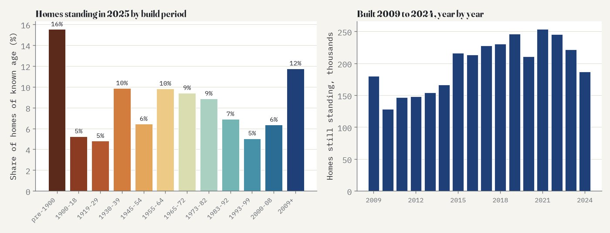
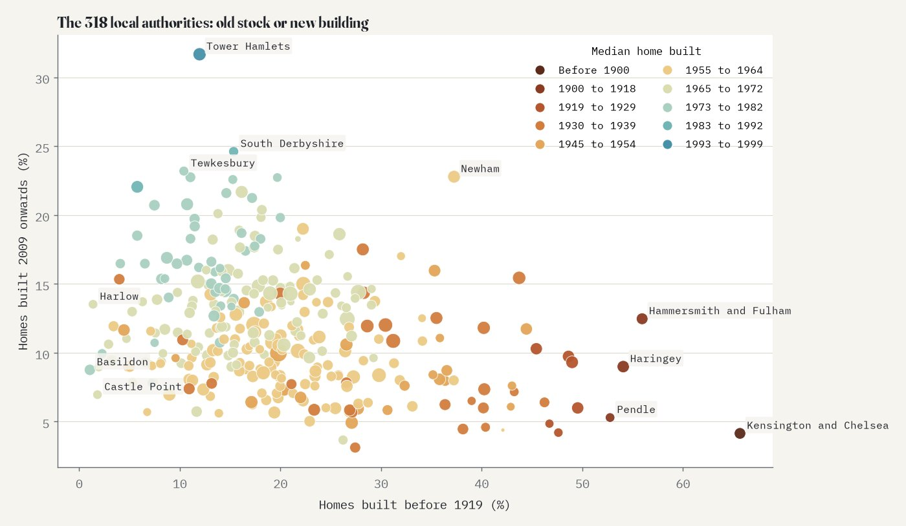
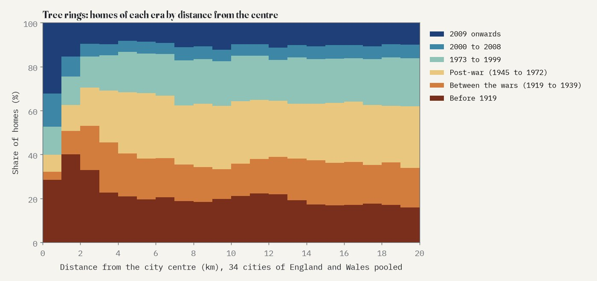
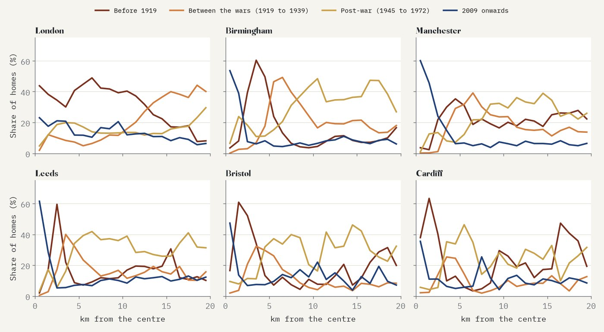
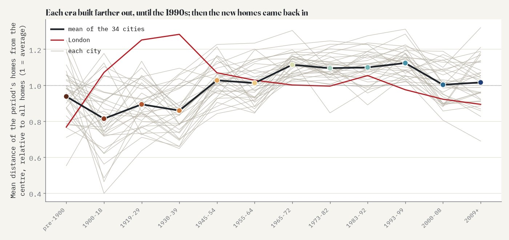
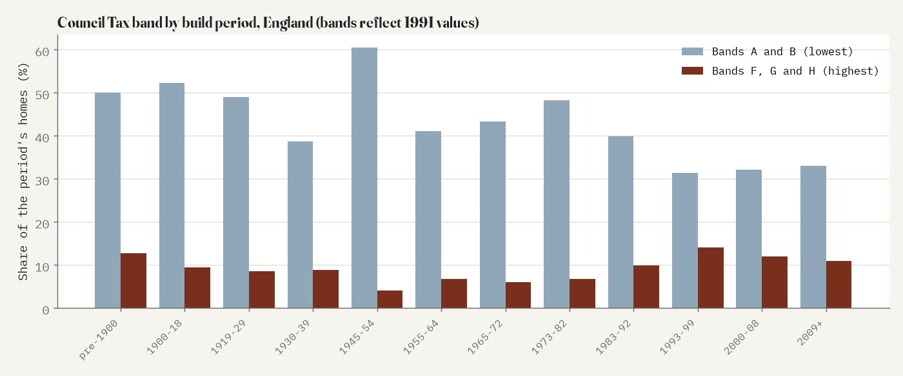

Every small area (LSOA) of England and Wales, coloured by when its homes were built, from the Council Tax lists of 2025. Choose what to colour by at the bottom; tap an area for its full age profile. England and Wales only.
Every home in England and Wales has a build period on the Council Tax list. The Valuation Office Agency publishes the counts for every small area, so we can see how old each neighbourhood is: the Victorian terraces, the semis of the 1930s, the estates of the 1960s and the flats and cul-de-sacs of the last fifteen years. This page maps all 35,672 small areas (LSOAs, about 760 homes each on average) and asks whether cities grow like trees, in rings.
Of the 27.0 million homes whose build period is known, 16% were built before 1900 and another 5% before the end of the First World War. The interwar years added 15%, the post-war decades to 1972 26%, and everything since 2009 12%. The median home in England and Wales was built between 1955 and 1964. Wales is older than England: 30% of Welsh homes predate 1919, against 20% in England.
Small areas follow the same pattern. In 43% of them the median home is post-war (1945 to 1972), in 21% it was built between 1973 and 1999, in 18% between the wars and in 13% before 1919. In 559 areas at least nine homes in ten predate 1919; in 227 at least nine in ten were built since 2009.

Homes standing in 2025 by build period (left) and by year since 2009 (right). These are survivors: homes since demolished are not counted.
The oldest local authority is Kensington and Chelsea, where 66% of homes were built before 1919, followed by Hammersmith and Fulham (56%), Haringey (54%) and Pendle in Lancashire (53%). At the other end are the new towns: in Basildon and Harlow only about 1% of homes are that old. The newest stock is in Tower Hamlets, where 32% of homes were built in 2009 or later, then South Derbyshire (25%) and Tewkesbury (23%). In 1,032 small areas at least half the homes are that new; 34 of them are in Tower Hamlets and 25 in Newham.

Each circle is a local authority, sized by its number of homes and coloured by the build period of its median home.
Cities grow outwards, so models of urban growth expect older homes near the centre and newer ones towards the edge. I took the 34 cities of England and Wales that Natural Earth lists with at least 100,000 people, and for each small area within 20 km of a centre measured how far it is from the nearest one. Then I asked where the homes of each era stand.
The rings are there. Pooling all 34 cities, the homes built between 1900 and 1918 stand closest to the centre, the interwar semis farther out, the post-war estates farther still. (Homes from before 1900 stand a little farther out than those of 1900 to 1918, probably because the old towns and villages now inside the 20 km circles are full of them.) From before 1900 to 1965 to 1972, each successive era's homes stand on average 4.3% farther from the centre than the era before (95% interval 3.1% to 5.5%), and the order holds in 33 of the 34 cities. In 32 of the 34 cities the band with the most interwar homes lies beyond the band with the most pre-1919 homes and inside the band with the most homes of 1955 to 1972. Try Birmingham's interwar ring or Leeds.

Share of homes of each era by distance from the centre, 34 cities pooled, in 1 km bands.

Four eras by distance from the centre in six cities (1 km bands with at least 1,000 homes).
The outward march stopped in the 1990s. Homes built between 1993 and 1999 stand the farthest out of any era, 2% farther than those of 1983 to 1992. Then the direction flips: homes of 2000 to 2008 stand 9% closer in than those of 1983 to 1992, and homes of 2009 onwards 8% closer. Against the homes of 1983 to 1999, the newest homes stand on average 9% closer to the centre (95% interval 5% to 13%), and they do so in 26 of the 34 cities.
The clearest sign is in the middle. Within 1 km of the 34 centres, 32% of homes were built in 2009 or later and another 15% between 2000 and 2008; 79% of all homes in these central areas are flats. The ring of Victorian and Edwardian housing begins just outside, where 40% of homes between 1 and 2 km from the centre predate 1919. Look at Manchester, Leeds or Birmingham with the map set to homes built since 2009.

How far out each era's homes stand, relative to all homes (1 = average), for each city (grey), London (red) and the mean of the 34 cities (black).
One test did not go the way I expected. I also asked whether the average build year rises steadily with distance from the centre. It does, by 0.6 years per km, but when I moved each city centre 10 km in a random direction and repeated the test 200 times, the fake centres gave a slope as steep in 8.5% of tries. So that simple gradient is not good evidence of anything about centres. The rings of each era (the 4.3% per era) pass the same test easily: no fake centre came close.
Old homes are terraces and flats: where the median home predates 1919, 43% of homes are terraced houses and 37% flats. Where it is interwar, 33% are semis. Where it is from 2009 or later, 51% are flats. In England, 13% of homes built before 1900 are in the top Council Tax bands (F to H, set on 1991 values) against 4% of homes built between 1945 and 1954 and 11% of homes built since 2009.

Council Tax band by build period, England.
Data. The Valuation Office Agency's Council Tax stock of properties for 31 March 2025 counts every home on the Council Tax lists by build period and band (table CTSOP4.1) and by type and band (CTSOP3.1), for every lower layer super output area (LSOA) of 2021. Counts are rounded to the nearest 10 and counts under five are suppressed; I count those as zero (counting them as 2.5 changes nothing that matters). The build period is the VOA's age code. There is no code for 1940 to 1944, and 0.7% of homes have no recorded period; they are left out of the shares.
Cities. The 34 cities are Natural Earth's places in England and Wales with at least 100,000 people; the centre is the city's point on Wikidata. A small area belongs to its nearest centre if it lies within 20 km. Distances are from a point inside each area to the centre.
Tests. The analysis was pre-specified in a written plan before any distances were computed: the hypotheses, the models, nine robustness checks (including centres from Natural Earth instead of Wikidata, 10 and 30 km circles, leaving out each region in turn and leaving out London) and the moved-centre test. The rings and the reversal hold in every check; the details are in the paper.
What this cannot say. These are the homes standing today. Demolition and redevelopment remove old homes, and conversions split others into flats, so an area's age profile is what survived, not what was built. The age code is an assessment, coarse before 1900. Council Tax properties include annexes and some caravans and houseboats. And distance from a single centre is a simplification for polycentric places such as Stoke-on-Trent or the West Midlands.